Most wiszący nad rzeką Avon w zachodniej Anglii, wybudowany na granicy dzielnicy Bristolu Clifton (stąd nazwa) i hrabstwa Somerset. Składa się z dwóch wież oraz szeregu konstrukcji wiszących. Jest symbolem miasta Bristol. Most otwarto w 1864 roku, już po śmierci głównego inżyniera oraz projektanta Isambarda Brunela. Pomimo upływu prawie 150 lat od jego otwarcia, nie dokonywano żadnych remontów kapitalnych. Z mostu oddano pierwszy w historii udokumentowany skok na bungee w roku 1979. Most, sfotografowany w czasie trwania „International Balloon Fiesta”, znalazł się na jednej z tapet logowania systemu Windows 10.
Pałac Westminsterski
Pałac Westminsterski - zabytkowy, neogotycki pałac w Londynie, w Wielkiej Brytanii; siedziba brytyjskiej Izby Gmin, Izby Lordów oraz urzędów z nimi związanych, w 1987 roku wpisany na listę światowego dziedzictwa UNESCO. Jego budowę rozpoczął Knut Wielki w 1016 roku. W XIII wieku stał się politycznym centrum angielskiej państwowości. Do 1512 roku służył jako siedziba monarchy. Od XIII stulecia obradował w nim Parlament. Został przebudowany w XVIII wieku w związku z ustanowieniem Królestwa Wielkiej Brytanii i związanym z tym powiększeniem aparatu administracyjnego. W 1834 roku spłonął w pożarze. Został odbudowany w latach 1840–1870 przez Charlesa Barry’ego przy współpracy z Augustusem Puginem. W latach 1940–1941 ucierpiał podczas nalotów niemieckich. Prace remontowe trwały od 1945 do 1950 roku. W latach 1981–1994 został poddany renowacji. Składa się z trzech skrzydeł. Najważniejsze pomieszczenia umiejscowione są w osi centralnej. W samym środku znajduje się Central Lobby, po obu jego stronach, w takiej samej odległości znajdują się sale posiedzeń Izby Lordów (Lords Chamber) oraz Izby Gmin (Commons Chamber). Na północnym krańcu znajduje się wieża Elizabeth Tower, określana również jako Big Ben.
Royal Albert Hall
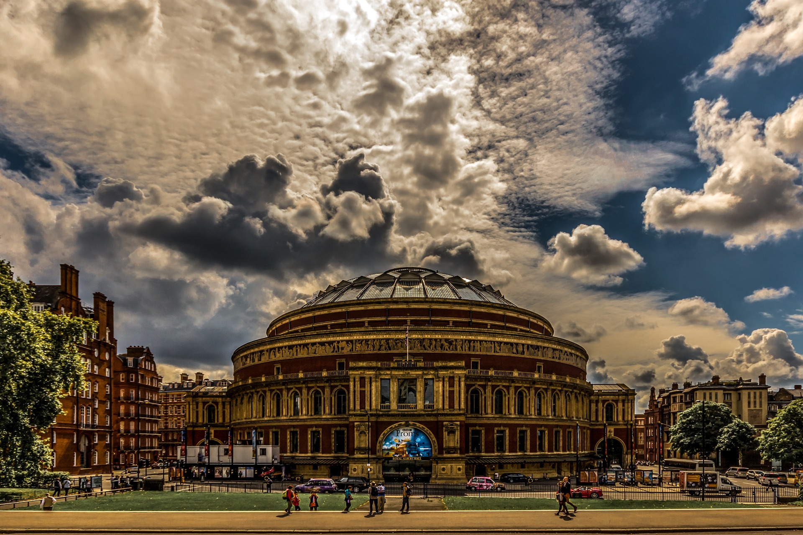
Royal Albert Hall - sala koncertowa w Londynie poświęcona mężowi królowej Wiktorii, księciu Albertowi. Mieści się w dzielnicy South Kensington w centralnym Londynie, w rejonie znanym powszechnie jako Albertopolis. The Royal Albert Hall jest częścią pomnika upamiętniającego Alberta – niedaleko znajduje się Albert Memorial, pomnik ku jego czci. Jest to także miejsce, gdzie znajdują się największe w Wielkiej Brytanii organy oraz siedziba Proms.
York Minster
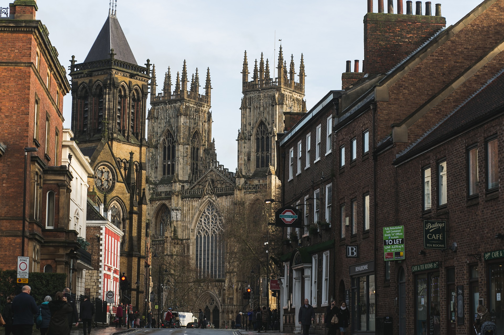
York Minster - gotycka katedra położona w Yorku, w hrabstwie North Yorkshire w Anglii. Obok katedry w Kolonii jedna z największych katedr gotyckich w Europie Północnej. Jest siedzibą arcybiskupa Yorku, drugiego co ważności (po arcybiskupie Canterbury) dostojnika w angielskiej hierarchii kościelnej; jest również ośrodkiem administracyjnym diecezji York. Obecnie katedra jest udostępniania do zwiedzania, a opłaty są przeznaczane na renowację.
The British Museum
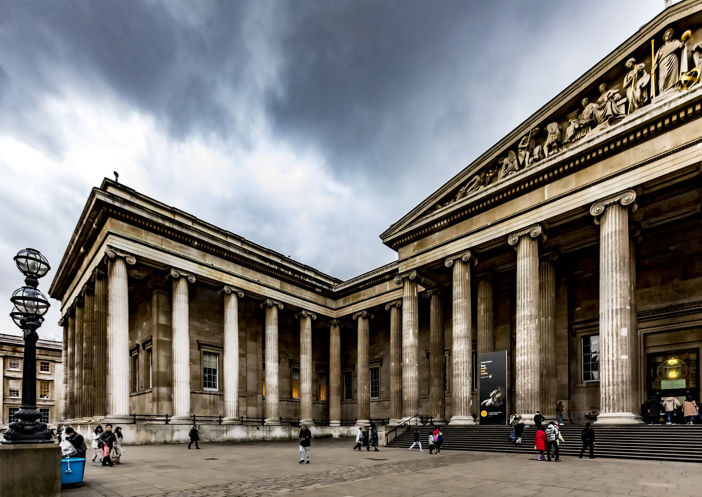
The British Museum - muzeum narodowe z siedzibą w Londynie, największe muzeum Wielkiej Brytanii i jedno z największych na świecie – posiada ok. 8 milionów eksponatów, szczególnie bogate są zbiory archeologiczne i etnograficzne. Muzeum powstało z inicjatywy irlandzkiego lekarza, przyrodnika i kolekcjonera sir Hansa Sloane’a. Sloane zaczął kolekcjonować okazy roślin i zwierząt w 1687 roku, kiedy znalazł się na Jamajce jako lekarz nowego gubernatora kolonii. Podczas pobytu na wyspie zgromadził ponad 600 obiektów. Jego małżeństwo z Elizabeth Langley Rose, dziedziczką plantacji cukru na Jamajce, przyniosło mu znaczne środki finansowe, które wykorzystał do powiększania zbioru. Przejmował całe kolekcje, m.in. Jamesa Petivera, i kupował interesujące obiekty od podróżników i osadników kolonialnych z terenu całego Imperium Brytyjskiego. W jego zbiorach znajdowało się m.in. 32 tys. monet i medali, 50 tys. książek, druków i rękopisów, 334 zielniki oraz ponad 1000 rzeczy związanych z antykiem. W momencie śmierci Sloane’a w 1753 roku jego kolekcja liczyła 71 tys. obiektów. W swoim testamencie Sloane przekazał całą kolekcję królowi Jerzemu II dla narodu w zamian za wypłatę 20 tys. funtów jego spadkobiercom oraz pod warunkiem, że Parlament utworzy dla kolekcji nowe i ogólnodostępne muzeum publiczne. Monarcha nie wykazał większego zainteresowania zbiorami i odmówił transkacji. Zbiory zostały zaoferowane Parlamentowi, który zdecydował się na kupno, a środki na ten cel zostały zebrane przy pomocy loterii. Ustawa o utworzeniu Muzeum Brytyjskiego (ang. The British Museum Act 1753) została przyjęta przez Parlament 7 czerwca 1753 roku. Muzeum było pierwszą publicznie dostępną placówką tego typu na świecie.
Atrakcje Walii
Akwedukt i kanał Pontcysyllte
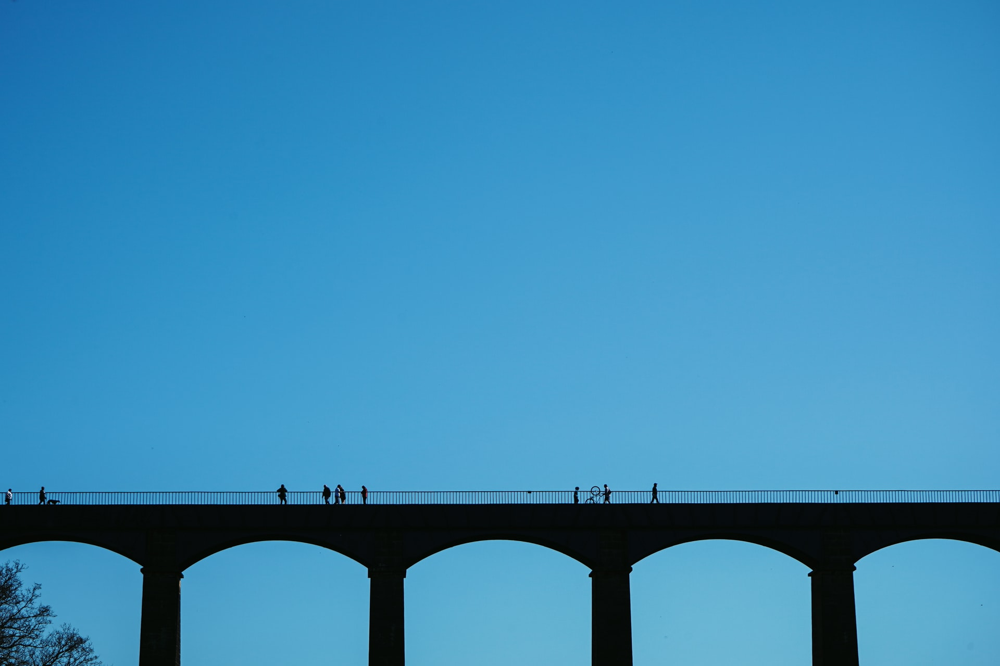
Akwedukt i kanał Pontcysyllte - kanał o długości 18 kilometrów zbudowany w północno-wschodniej Walii na początku XIX wieku, stanowiący wybitne osiągnięcie inżynieryjne z czasów rewolucji przemysłowej. Akwedukt zaprojektowany przez inżyniera Thomasa Telforda z uwagi na rozwiązania technologiczne (zastosowanie żeliwa i kutego żelaza) i architekturę (monumentalizm i elegancja projektu) stanowi dzieło pionierskie, które stało się inspiracją dla do wielu innych tego typu realizacji na świecie. Obiekt został wpisany na Listę światowego dziedzictwa UNESCO jako arcydzieło geniuszu ludzkiego i wybitna synteza europejskiej myśli technicznej epoki. Akwedukt i kanał Pontcysyllte 6 lipca 1963 roku zostały wpisane na listę Zabytków Walii.
Bron-Yr-Aur
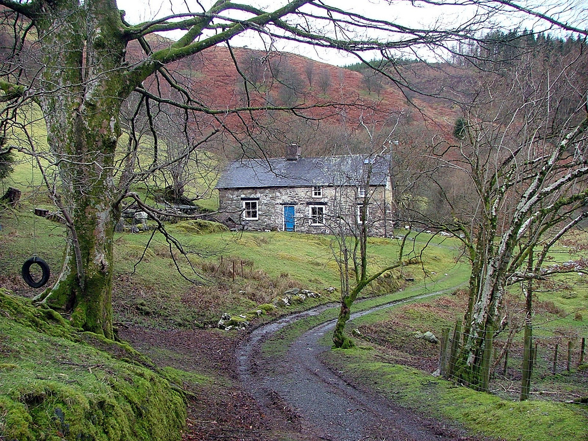
Bron-Yr-Aur - XVII-wieczny dom położony w hrabstwie Gwynedd w Walii. W języku walijskim nazwa domu oznacza złote wzgórze. Bron-Yr-Aur zyskało sławę głównie dzięki powiązaniom z grupą Led Zeppelin. W latach 50. dom wykorzystywany był przez rodzinę wokalisty Roberta Planta jako miejsce letniego wypoczynku. W 1970 Plant wraz z gitarzystą Jimmym Page'em regenerowali tam siły po długiej i wyczerpującej trasie po Stanach Zjednoczonych. Brak bieżącej wody i elektryczności zainspirował ich do napisania oraz nagrania kilku piosenek, które zostały umieszczone na albumie Led Zeppelin III. Robert Plant powrócił z Jimmym Page'em do Bron-Yr-Aur podczas nagrywania albumu Jimmy Page & Robert Plant: Unledded w 1994. Krajobrazy okolicy można obejrzeć w wersji DVD tego albumu.
Kaplica św. Govana
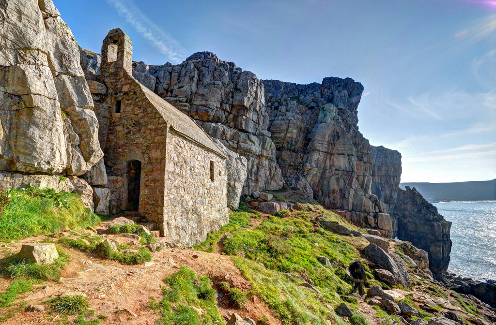
Kaplica św. Govana - XIII-wieczna kaplica położona w hrabstwie Pembrokeshire, na terenie Parku Narodowego Pembrokeshire Coast. Do kaplicy prowadzi ciąg schodów, których według legendy nie da się dokładnie policzyć. Kaplica znajduje się na terenie Parku Narodowego Pembrokeshire Coast. Należy do najbardziej malowniczych kaplic pustelniczych Wielkiej Brytanii. Jest dedykowana św. Govanowi, pustelnikowi, który według tradycji żył tam w VI wieku i został pod nią pochowany. Tradycja głosi, że kiedy św. Govan przybył do Pembrokeshire, piraci z wysp Lundy próbowali go pochwycić. W tym momencie szczelina w skale na miejscu obecnej kaplicy cudownie otworzyła się i św. Govan mógł ukryć się w niej, po czym, gdy piraci odpłynęli, skała otworzyła się w cudowny sposób po raz drugi.
Plas Mawr
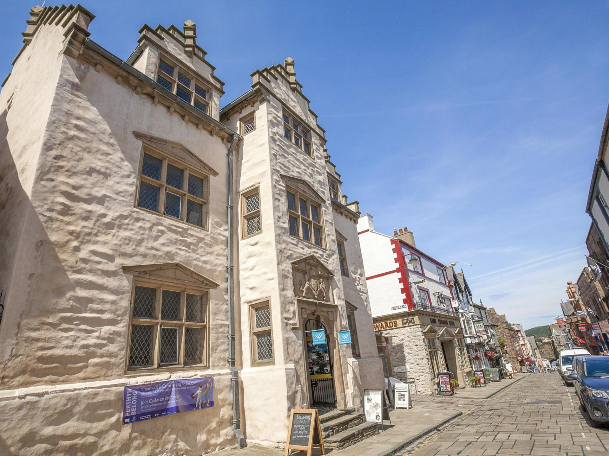
Plas Mawr - okazała XVI-wieczna rezydencja w Conwy, zbudowana na zlecenie wpływowego walijskiego kupca, Roberta Wynna. Klejnot architektoniczny, najwybitniejszy zachowany budynek miejski epoki elżbietańskiej na terenie Wielkiej Brytanii. Jego oryginalne wyposażenie pochodzi z 1665 roku. jest najbardziej kompletnym, obszernym domem miejskim epoki elżbietańskiej, wyjątkowym ze względu na stan zachowania oraz sztukaterię wewnątrz, mającą znaczenie ogólnonarodowe.
Y Gaer
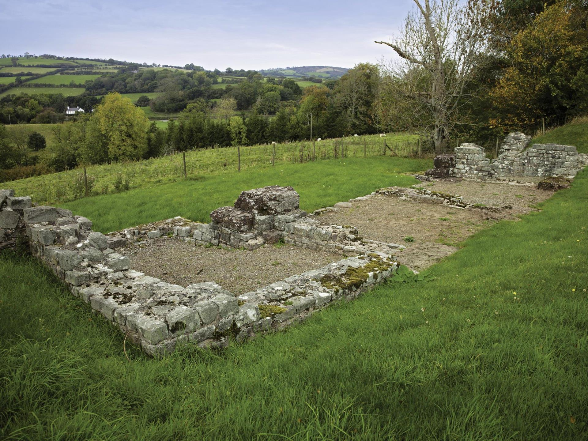
Y Gaer - pozostałości rzymskiego fortu, znajdujące się w środkowej Walii, około 2 km na zachód od miasta Brecon. Opiekę nad zabytkiem sprawuje Cadw. Fort wybudowano około 75 roku n.e. u zbiegu rzek Usk i Ysgir. Tereny te opanowane były wówczas przez celtyckie plemię Sylurów. Lokacja fortu była związana ze skrzyżowaniem dróg łączących forty Isca i Gobannium na wschodzie z Alabum, Coelbren i Moridunum na zachodzie. W pobliżu fortu podczas prac wykopaliskowych znaleziono wiele nagrobków, m.in. młodego kawalerzysty Candidusa. Znajduje się on obecnie w Brecknock Museum w Brecon. Do naszych czasów zachowały się fragmenty murów obronnych wraz z fundamentami narożnych wież oraz widocznymi miejscami na bramę. Ruiny znajdują się na prywatnym gruncie i dojazd do nich jest nieoznakowany.
Atrakcje Szkocjii
Archikatedra Najświętszej Maryi Panny Wniebowziętej
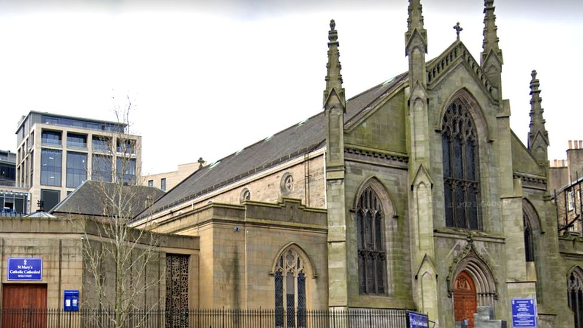
Archikatedra Najświętszej Maryi Panny Wniebowziętej w Edynburgu - rzymskokatolicka katedra w Edynburgu, siedziba katolickiego arcybiskupa Saint Andrews i Edynburga i główny kościół archidiecezji St Andrews i Edynburga. Został wybudowany w 1814 i zaprojektowany przez architekta Jamesa Gillespie Grahama. Kościół przez lata został znacznie upiększony i w 1878 podczas odbudowy hierarchii kościelnej w Szkocji został prokatedrą nowej archidiecezji Saint Andrews i Edynburga. W dniu 5 lipca 1886 został podniesiony do godności archikatedry i otrzymał wszystkie prawa i przywileje jej przysługujące. Papież Jan Paweł II odwiedził katedrę w maju 1982 podczas wizyty duszpasterskiej do Szkocji.
Wieża Orchardton
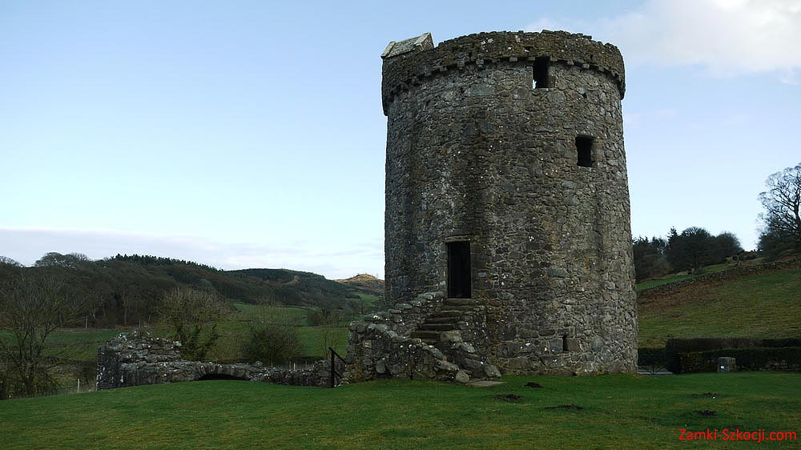
Wieża Orchardton - ruiny wieży rycerskiej położona w Kirkcudbrightshire, Dumfries and Galloway w Szkocji. Jedyna w Szkocji wieża obronna zbudowana na planie koła. Zbudowana po roku 1456 przez rodzinę Cairns, właścicieli pobliskiego zamku Orchardton. Wieża jest wysoka na 11 metrów i 9 metrów średnicy. Na pierwszym poziomie 4-kondygnacyjnej wieży znajdowała się piwnica. Na drugim poziomie salon z kominkiem i pisciną. Na pozostałych dwóch kondygnacjach znajdowały się prawdopodobnie sypialnie.
Pałac Dunfermline
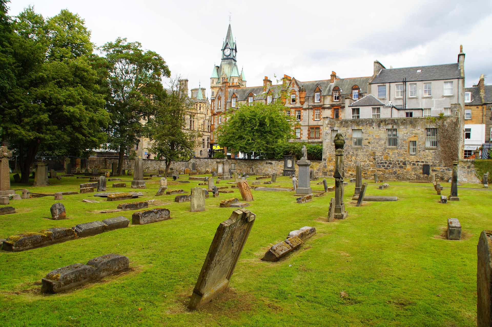
Pałac Dunfermline - dawna rezydencja królów Szkocji istniejąca niegdyś w mieście Dunfermline w hrabstwie Fife. W średniowieczu pałac zapisał się przede wszystkim jako miejsce narodzin królów Dawida II i Jakuba I. Był on jedną z ulubionych rezydencji czwórki kolejnych monarchów: Jakuba IV, Jakuba V, Marii i Jakuba VI. Ten ostatni władca w 1589 przekazał pałac królowej Annie Duńskiej jako prezent z okazji ich ślubu. Ostatnia odnotowana wizyta monarchy w pałacu miała miejsce w 1650, a odwiedzającym był Karol II. Obecnie pozostała po nim tylko jedna z głównych ścian oraz dawna kuchnia.
Soutra Aisle
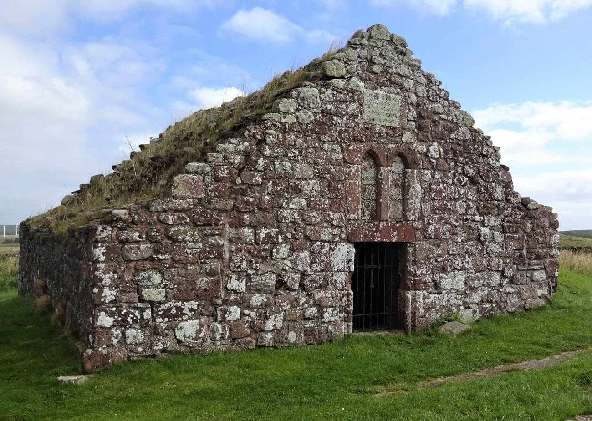
Soutra Aisle - ruiny miejscowości w południowej Szkocji, położonej na dawnej trasie pielgrzymek z Edynburga do klasztorów w północnej Anglii. W 1164 roku szkocki król Malcolm IV nakazał wybudować w tym miejscu klasztor augustianów, których zadaniem miała być opieka nad chorymi pielgrzymami. Wkrótce zdobył on sławę jednego z najznamienitszych szkockich szpitali. W ruinach szpitala przeprowadzono badania, z których wynika, że medycyna średniowieczna stała tam na niezwykle wysokim poziomie. Mnisi przeprowadzali skomplikowane operacje chirurgiczne, leczyli depresję, a także objawy szkorbutu.
Wielka Polska Mapa Szkocji
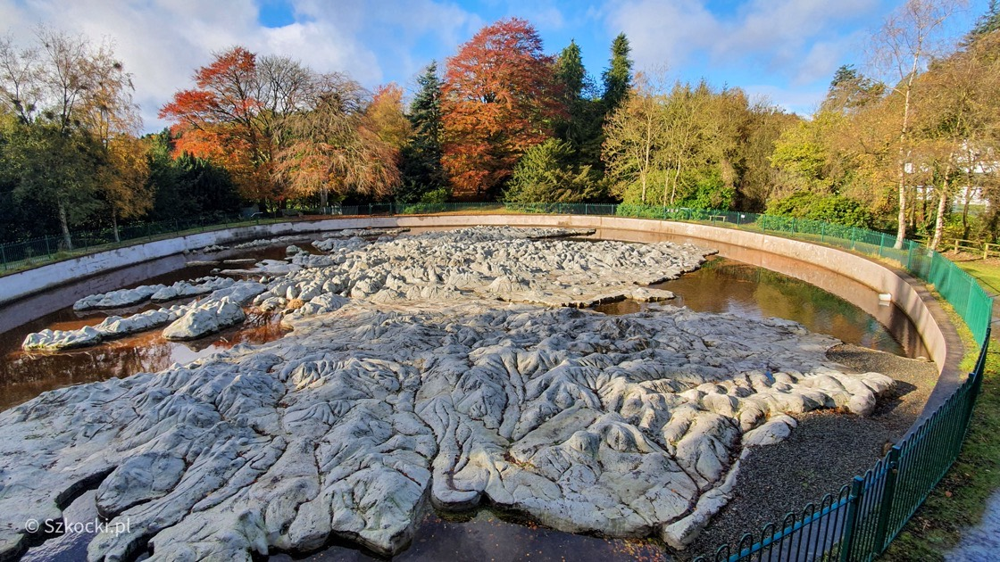
Wielka Polska Mapa Szkocji - znana również jako Wielka Mapa gen. Maczka, trójwymiarowy model całej Szkocji o wymiarach 50 × 40 m, wykonany z betonu i kamienia, znajdujący się na terenie parkowym zamku Barony Castle (zwanym również Blackbarony), na obrzeżach wioski Eddleston niedaleko Peebles w hrabstwie Scottish Borders. Mapę tę zbudował Jan Tomasik, były żołnierz 1 Dywizji Pancernej. Jest to największa na świecie mapa plastyczna.
Atrakcje Irlandii Północnej
Dunluce Castle
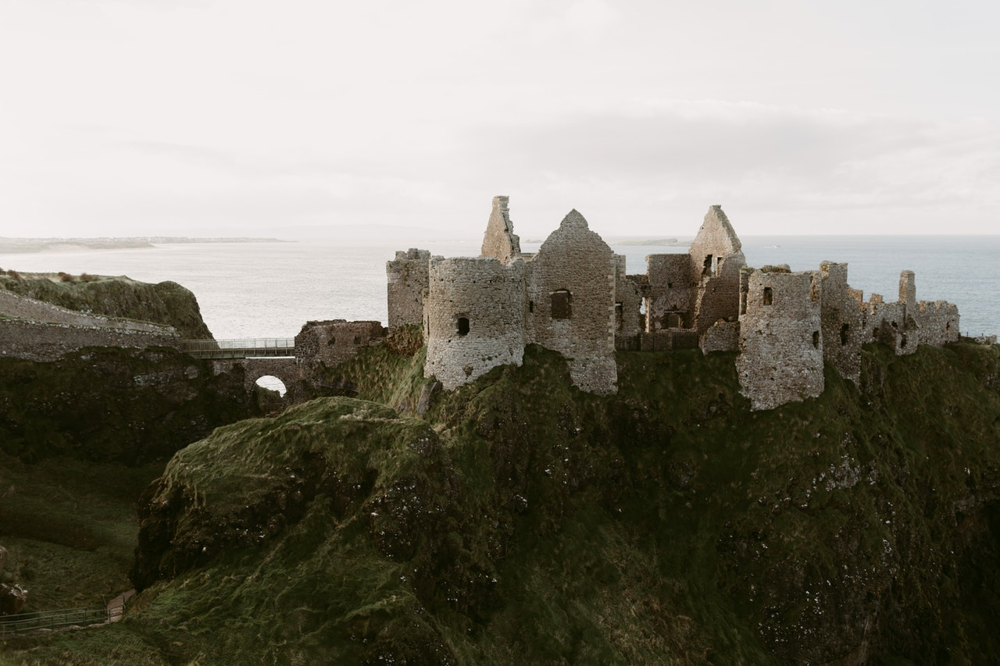
Dunluce Castle - ruiny średniowiecznego zamku należącego niegdyś do klanu McDonnell. Znajduje się w Hrabstwie Antrim na skraju bazaltowego klifu. Połączony z lądem jest za pomocą mostu, gdyż jest otoczony stromymi klifami z każdej strony, co w w dawnych wiekach sprawiało, że zamek był w perfekcyjnej pozycji do obrony. Sam zamek jest popularnym obiektem w wielu dziełach popkulturowych, przykładowo został umieszczony w albumie zespołu Led Zeppelin zatytułowanym Houses of the Holy; był także miejscem akcji w filmie "The Medallion" z Jackie Chanem, w którym służył za kryjówkę Snakehead'a pod zmienioną nazwą "Ravens Keep".
Giant's Causeway (Grobla Olbrzyma)
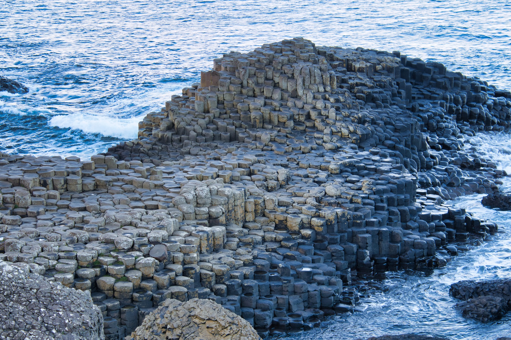
Giant's Causeway - po polsku Grobla Olbrzyma, charakterystczny obiekt naturalny powstały w wyniku erupcji wulkanu. Po kontakcie lawy z wodą powstały niezwykle wyglądające kształty, które wydają się zbyt symetryczne, żeby były dziełem natury. Jednak według prastarych irlandzkich i szkockich wierzeń groblę wybudował olbrzym – Finn McCool (według niektórych zapisów był tylko bardzo wysokim wojownikiem), który chciał przejść z Irlandii do Szkocji aby pokonać innego olbrzyma, Benandonnera. Obaj wojownicy tylko krzyczeli na siebie z dwóch brzegów, a McCool chcąc zmierzyć się ze swoim przeciwnikiem wbijał w dno kamienne pale, aż powstała grobla. Na miejscu przekonał się jednak, że jego przeciwnik jest dużo większy od niego i uciekł do swojego domu, a żona przebrała go za dziecko, aby zmylić podążającego za nim Benandonnera. Szkocki olbrzym po przybyciu do Irlandii przeraził się rozmiarami dziecka (pomyślał jak wielki będzie jak dorośnie) i uciekł do Szkocji rozbijając po drodze groblę, aby nikt już za nim nie podążył. Grobla Olbrzyma jest wpisana na Listę Światowego Dziedzictwa UNESCO.
Most linowy Carrick-a-Rede
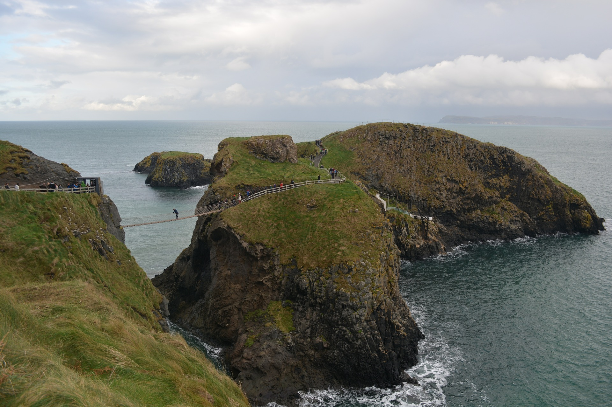
Most linowy Carrick-a-Rede - most łączący ląd z małą wysepką Carrickarede. Uważa się, że most przyjmował wiele form na przestrzeni wieków i służył irlandzkim rybakom do łowienia łososi. Na dzień dzisiajszy most służy już tylko i wyłącznie jako obiekt turystyczny, ponieważ w regionie zostało bardzo mało ryb, dla porównania: w latach 60-tych XX wieku łowiono nad tym mostem około 300 łososi dziennie, natomiast w 2002, złowiono 300 ryb przez cały sezon, trwający od Czerwca do Września.
Mourne Mountains
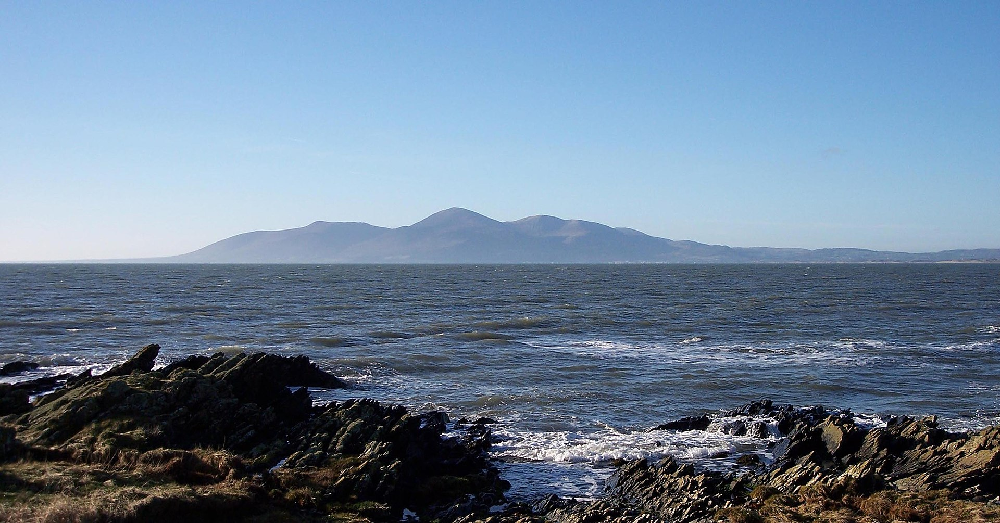
Mourne Mountains - Pasmo gór Mourne to klejnot koronny turystyki w Irlandii Północnej. Choć nie są to wysokie szczyty (najwyższy szczyt to Slieve Donard, którego wysokość wynosi zaledwie 848 m n.p.m.), to dzięki temu, że wyrastają niemal z morza sprawiają wrażenie o wiele wyższych niż są w rzeczywistości. Góry połączone są ze sobą niezrównaną siecią ścieżek, a cały obszar jest określany najlepszym miejscem na piesze wędrówki w Irlandii Północnej.
Scrabo Tower
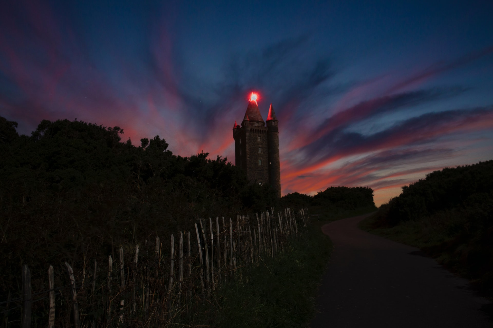
Scrabo Tower - Wieża Scrabo została wzniesiona w 1857 roku jako punkt obserwacyjny przez panujących nad Irlandią Brytyjczyków, którzy obawiali się ataku Napoleona. Zbudowali więc wieżę obserwacyjną i liczyli na to, że z daleka zobaczą nadpływające francuskie statki. Do inwazji jednak nigdy nie doszło. Sama wieża ma 38 metrów wysokości i znajduje się 160 metrów nad poziomem morza, dzięki czemu rozpościera się z niej przepiękny widok na całe hrabstwo Down, morze, a przy dobrej pogodzie widać z niej wybrzeże Szkocji.